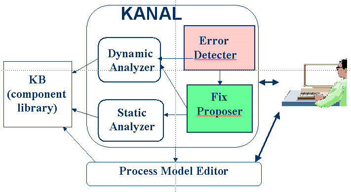

|
|

|
| Knowledge Analysis on Process Models | |
Description
KANAL relates pieces of information in process models among themselves and to the existing KB, analyzing how different pieces of input are put together to achieve some effect. It builds interdependency models from this analysis and uses them to find errors and propose fixes. (Kim and Gil, IJCAI-01) KANAL builds upon previous work on EXPECT using Interdependency Models (Kim and Gil AAAI-99, Kim and Gil AAAI-2000). The work on EXPECT analyzed problem-solving interdependencies, which model how different pieces of problem solving (procedural) knowledge relate to each other and to the class definitions in domain ontologies. Our initial work concentrates on process models, i.e., knowledge describing activities and subprocesses as well as their relationships. KANAL's checks are done on the simulated execution of the process model. Using skolem instances, we can check general scenarios of the animation of a process. The result of each animation are used as a model of interdependencies among the sub-steps of the process model. KANAL performs a variety of verification checks to process models, including unachieved conditions of steps in a process model, expected and unexpected effects, potential loops, and disjunctive model branches. KANAL will also help users with validation checks of redundancies, and resource use within a process model.  KANAL has been used by various end users including biologists who built and tested models of complex molecular biology processes and army officers who used KANAL to critique their plans, i.e., courses of action (COAs). We found that its analysis report was very useful for checking the plans that were entered by users and often suggested useful ways of improving the plans. However we also found that sometimes users wish to extend the background knowledge that is used to produce the analysis report. For example, they may want to define various special cases of actions that are relevant for different situations, or exceptions that were not specifically addressed in the general background knowledge. In general, knowledge bases are never complete and it is important to provide a capability of adapting the knowledge base for varying needs. To support this capability we have extended our authoring environment so that the user can choose to enter special cases of critiquing knowledge as well as to change the description of the process itself in order to improve the resulting report. In this extension, instead of describing different cases in a single definition, we make use of the inheritance mechanism in the given knowledge representation system to represent each special case as a separate entity. We believe that this approach provides a more a natural view of special cases for end users and has efficiency advantages. The details are described in Kim and blythe, IUI-2003.